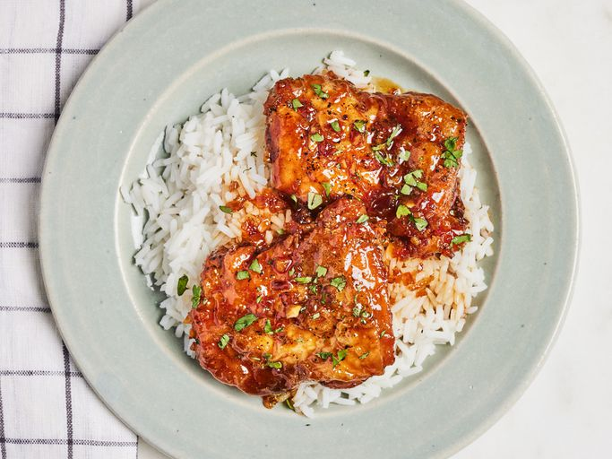

Honey Garlic Chicken Thighs
Description
Juicy, tender chicken thighs glazed in a rich, sticky honey garlic sauce—this easy, crowd-pleasing recipe balances sweet, savory, and garlicky flavors in every bite. The chicken is pan-seared or oven-baked to a golden crisp, then coated in a luscious sauce made with honey, fresh garlic, soy sauce, and a touch of vinegar for depth. Perfect served over rice, mashed potatoes, or roasted veggies, it’s a weeknight dinner favorite that feels like comfort food with a gourmet twist.
Ingredients
- 8 (5 ounce) boneless chicken thighs
- salt and ground black pepper to taste
- 2 tablespoons olive oil, or as needed
- 1/2 medium onion, finely chopped
- 7 cloves garlic, chopped, or to taste
- 1 cup honey
- 1/2 cup soy sauce
- 1 pinch onion powder, or to taste
- 1 pinch garlic powder, or to taste
- 1/4 cup of chopped fresh cilantro
Directions
- Gather all ingredients.
- Season chicken on both sides with salt and pepper.
- Heat olive oil in a cast iron skillet over medium-high heat. Add chicken and brown on one side, 3 to 5 minutes.
- Flip chicken and add onion and garlic; continue to cook until chicken is mostly (but not fully) cooked and onion and garlic are soft, 5 to 7 minutes more. Remove chicken to a plate.
- Add honey, soy sauce, onion powder, and garlic powder to the skillet. Stir and scrape the bottom of the pan with a wooden spoon to get garlic and onion to mix with the liquid.
- Return chicken to the skillet, cover, and reduce heat to medium. Cook until no longer pink in the center and juices run clear, about 10 more minutes, turning once halfway through. An instant-read thermometer inserted into the center of a thigh should read at least 165 degrees F (74 degrees C).
- Arrange chicken on a serving plate and drizzle liquid from the pan on top. Sprinkle with cilantro to serve.